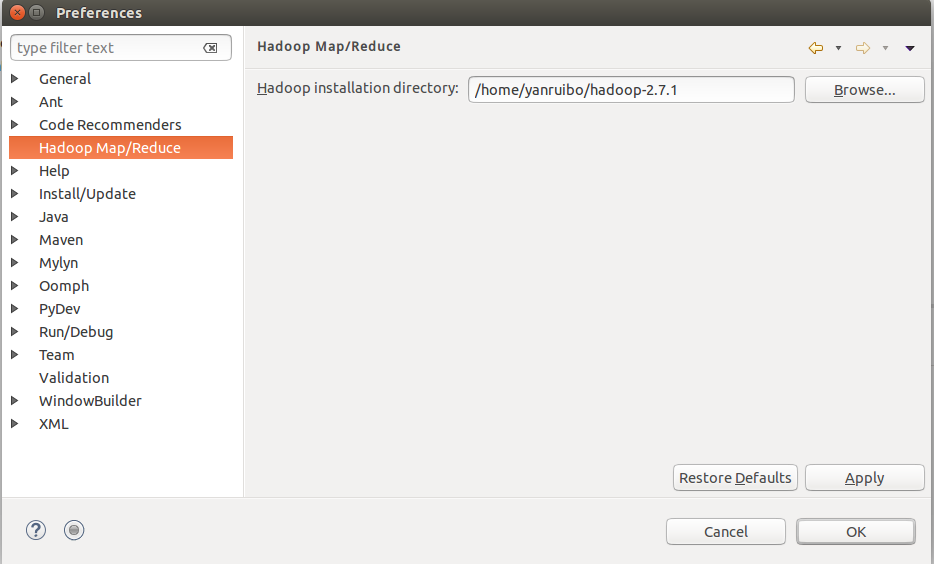
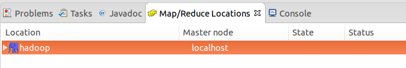
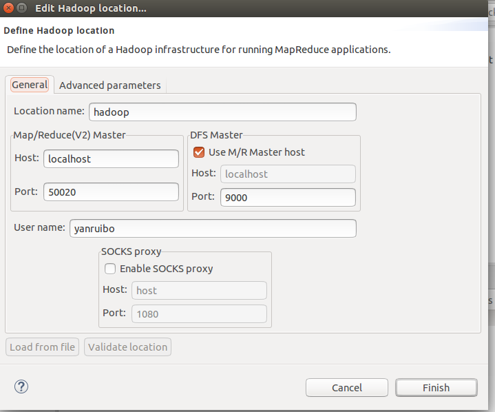
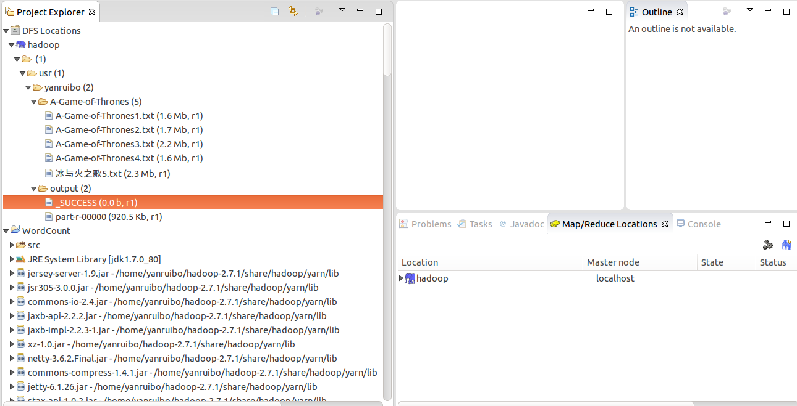

Ubuntu14.04上hadoop2.7.1环境配置以及第一个MapReduce程序-WordCount
1. 实验前准备工作
1.1 安装hadoop伪分布式系统
1.下载hadoop源文件，hadoop-2.7.1.tar.gz，将其解压在一个文件夹中，这里我解压到了我的电脑的主目录下面，配置参数，主要修改一下几个文件：
core-site.xml
1
2
3
4
5
6
7
8
9
10<configuration>
<property>
<name>fs.defaultFS</name>
<value>hdfs://localhost:9000</value>
</property>
<property>
<name>hadoop.tmp.dir</name>
<value>/home/yanruibo/hadoop-2.7.1/tmp</value>
</property>
</configuration>
1
2
3
4
5
6
7
8
9
10
11
12
13
14<configuration>
<property>
<name>dfs.replication</name>
<value>1</value>
</property>
<property>
<name>dfs.namenode.name.dir</name>
<value>/home/yanruibo/hadoop-2.7.1/dfs/name</value>
</property>
<property>
<name>dfs.datanode.data.dir</name>
<value>/home/yanruibo/hadoop-2.7.1/dfs/data</value>
</property>
</configuration>1
2
3
4
5
6<configuration>
<property>
<name>mapreduce.framework.name</name>
<value>yarn</value>
</property>
</configuration>1
2
3
4
5
6
7
8
9
10
11<configuration>
<!-- Site specific YARN configuration properties -->
<property>
<name>yarn.resourcemanager.hostname</name>
<value>localhost</value>
</property>
<property>
<name>yarn.nodemanager.aux-services</name>
<value>mapreduce_shuffle</value>
</property>
</configuration>1
export JAVA_HOME=/usr/java/jdk1.7.0_80
1
2export HADOOP_HOME=/home/yanruibo/hadoop-2.7.1
export PATH=$PATH:${HADOOP_HOME}/bin
2.安装ssh
1 | sudo apt-get install ssh |
设置ssh免登陆认证 1
2ssh-keygen -t rsa -P '' -f ~/.ssh/id_rsa
cat ~/.ssh/id_rsa.pub >> ~/.ssh/authorized_keys1
ssh localhost
1
2
3
4
5
6
7
8
9
10
11
12
13
14yanruibo@yanruibo-PC:~$ ssh localhost
The authenticity of host 'localhost (127.0.0.1)' can't be established.
ECDSA key fingerprint is 08:09:86:92:60:c2:62:09:21:3a:89:91:d5:8b:24:de.
Are you sure you want to continue connecting (yes/no)? yes
Warning: Permanently added 'localhost' (ECDSA) to the list of known hosts.
Welcome to Ubuntu 14.04.3 LTS (GNU/Linux 3.19.0-28-generic x86_64)
* Documentation: https://help.ubuntu.com/
The programs included with the Ubuntu system are free software;
the exact distribution terms for each program are described in the
individual files in /usr/share/doc/*/copyright.
Ubuntu comes with ABSOLUTELY NO WARRANTY, to the extent permitted by
applicable law.
3.第一次启动hadoop时要格式化一下hdfs文件系统
1
hdfs namenode -format
1
start-all.sh
1
2
3
4
5
6
7
8
9
10yanruibo@yanruibo-PC:~$ start-all.sh
This script is Deprecated. Instead use start-dfs.sh and start-yarn.sh
Starting namenodes on [localhost]
localhost: starting namenode, logging to /home/yanruibo/hadoop-2.7.1/logs/hadoop-yanruibo-namenode-yanruibo-PC.out
localhost: starting datanode, logging to /home/yanruibo/hadoop-2.7.1/logs/hadoop-yanruibo-datanode-yanruibo-PC.out
Starting secondary namenodes [0.0.0.0]
0.0.0.0: starting secondarynamenode, logging to /home/yanruibo/hadoop-2.7.1/logs/hadoop-yanruibo-secondarynamenode-yanruibo-PC.out
starting yarn daemons
starting resourcemanager, logging to /home/yanruibo/hadoop-2.7.1/logs/yarn-yanruibo-resourcemanager-yanruibo-PC.out
localhost: starting nodemanager, logging to /home/yanruibo/hadoop-2.7.1/logs/yarn-yanruibo-nodemanager-yanruibo-PC.out1
2
3
4
5
6
7yanruibo@yanruibo-PC:~$ jps
11149 SecondaryNameNode
12989 Jps
10941 DataNode
10770 NameNode
11315 ResourceManager
11452 NodeManager
关闭所有进程，相应的是stop-all.sh
1.2 配置eclipse开发环境
首先下载hadoop的eclipse插件，从网上可以下载到，这个插件可以下载网上别人编译好的，也可以用eclipse自己编译，网上有教程，这里为了节省时间，我从网上自己下载了一个eclipse插件，hadoop-eclipse-plugin-2.7.1.jar，也是从csdn上下载的，可以自己搜索下载。下载下来之后放到eclipse安装文件夹下的plugins目录中，重启eclipse即可生效，然后在Window->Preferences->Hadoop Map/Reduce项中设置一下hadoop的home。
 然后切换到eclipse的Map/Reduce视图下面，
 右键 new hadoop location，按如下图所示进行配置，

注意端口号要配置正确，配置完成这些之后，新建一个Map/Reduce的工程，eclipse就自动把相应依赖的hadoop包加载到工程的path中，你还可以在Project Explorer中的DFS Locations中查看你的hdfs中的文件，能观察到这一点的前提是前面hdfs的端口配置正确，还有就是你执行了start-all.sh，把hadoop的那几个进程都启动起来了。

这里准备工作，即开发环境就搭建好了，下面就开始编写mapreduce程序。
2. 实验过程
2.1 基本要求Level 0 1
使用example里面的wordcount算法，统计每个词出现的次数，使用的命令为： 1
hadoop jar /home/yanruibo/hadoop-2.7.1/share/hadoop/mapreduce/hadoop-mapreduce-examples-2.7.1.jar wordcount /tmp/bigdata/2015/english_novel/* /user/2015210978/hw1-output1
1
2sftp -P 2222 2015210978@thumedia.org
put WordCount1.jar /home/20152109781
ssh -p 2222 2015210978@thumedia.org
1
2export HADOOP_CLASSPATH=WordCount1.jar
hadoop com.alvin.test.WordCount /tmp/bigdata/2015/english_novel/* /user/2015210978/hw1-output11
2
3
4
5
6
7
8
9
102015210978@cluster-3-0:~$ hadoop com.alvin.test.WordCount /tmp/bigdata/2015/english_novel/* /user/2015210978/hw1-output2
15/10/15 11:07:28 INFO client.RMProxy: Connecting to ResourceManager at cluster29/192.168.5.129:8032
15/10/15 11:07:29 INFO input.FileInputFormat: Total input paths to process : 1464
15/10/15 11:07:33 INFO mapreduce.JobSubmitter: number of splits:1464
15/10/15 11:07:34 INFO mapreduce.JobSubmitter: Submitting tokens for job: job_1426037502156_0240
15/10/15 11:07:34 INFO impl.YarnClientImpl: Submitted application application_1426037502156_0240
15/10/15 11:07:34 INFO mapreduce.Job: The url to track the job: http://cluster29:8088/proxy/application_1426037502156_0240/
15/10/15 11:07:34 INFO mapreduce.Job: Running job: job_1426037502156_0240
15/10/15 11:07:49 INFO mapreduce.Job: Job job_1426037502156_0240 running in uber mode : false
15/10/15 11:09:52 INFO mapreduce.Job: Job job_1426037502156_0240 completed successfully1
2hadoop fs -ls /user/2015210978/output1
hadoop fs -copyToLocal /user/2015210978/output1 ./1
get output1/* ./
2.2 基本要求Level 2
有了单词计数的基本功能，我们查看一下执行结果，发现会有一下的情况： 1
2
3
4
5
6
7
8"/de/ 1
"'Alexander 1
"'Ample.' 1
"3" 1
"52.43!" 1
"''Twon't 1
"But--how 2
"Bureaucracy,"--if 1"''Twon't "But--how "Bureaucracy,"--if这三个词两边的标点符号去掉是可以的，但是这三个词中间的标点符号去掉是不合理的，因此我实现的策略是只过滤每个单词两边的标点符号，对于中间的标点符号不进行过滤。具体见下面的代码： 1
2
3
4
5
6
7
8
9
10
11
12
13
14
15
16
17
18
19
20
21
22
23
24
25
26public void map(Object key, Text value, Context context) throws IOException, InterruptedException {
StringTokenizer itr = new StringTokenizer(value.toString());
while (itr.hasMoreTokens()) {
/*
* 此处进行一些优化 1.去掉单词首尾的空格 2.去掉单词首尾的标点符号和数字
*/
String s = itr.nextToken();
// 去掉单词首尾的空格
s = s.trim();
// 去除单词首部的标点符号
s = s.replaceFirst("(?i)^[^a-zA-Z]+", "");
/*
* 下面是去除单词尾部的标点符号，先把字符串反转，
* 然后再调用replaceFirst，
* 去除反转后的字符串首部的标点符号，再把字符串反转过来
*/
s = new StringBuilder(s).reverse().toString();
s = s.replaceFirst("(?i)^[^a-zA-Z]+", "");
s = new StringBuilder(s).reverse().toString();
//过滤之后s的值可能为空，比如全为数字的就变为空
if (!s.isEmpty()) {
word.set(s);
context.write(word, one);
}
}
}
1 | s = s.replaceFirst("(?i)^[^a-zA-Z]+", ""); |
解释一下上面的正则表达式，小括号即里面的问好和i表示不去分大小写，紧接着的上角号标示单词的起始位置，中括号即中括号中的内容标示不是大小写字母，所以这句话的意思是不区分大小写把单词首部的不是大小写字母的都去掉。也就是说只要能匹配到哪个正则表达式的字符串都被替换为空字符串，匹配不上的保留。
2.3 基本要求Level 3
将得到的结果合并成一个txt文档，并对每个单词按照字典排序，其实可以通过设置reducer的个数为1，如果结果文件比较小的话，应该就输出到一个文件中了，这一点在实验中进行了验证，以下是设置方法： 1
2//设置reducer的个数 通过设置reducer的个数为1，经过实验验证了输出结果全写在一个文件中了，结果文件也不大。
job.setNumReduceTasks(1);1
cat output2/* | sort -t' ' -k 1,1df > result.txt
2.4 基本要求Level 4
要求：自己实现shuffle等函数。
1.查了一些资料，可以自己写combiner函数， 每一个map都可能会产生大量的本地输出，Combiner的作用就是对map端的输出先做一次合并，以减少在map和reduce节点之间的数据传输量，以提高网络IO性能，是MapReduce的一种优化手段之一。Combiner有本地reduce功能（其本质上就是一个提前的reducer），在WordCount程序中可以单独写一个Combiner类，也可以用Reducer类来代替，然后在job那儿设置一下： 1
2
3
4
5
6
7
8
9
10
11
12
13
14
15
16/*
* Combiner类规定继承自Reducer
*/
public static class MyCombiner extends Reducer<Text, IntWritable, Text, IntWritable> {
private IntWritable result = new IntWritable();
public void reduce(Text key, Iterable<IntWritable> values, Context context)
throws IOException, InterruptedException {
int sum = 0;
for (IntWritable val : values) {
sum += val.get();
}
result.set(sum);
context.write(key, result);
}
}1
job.setCombinerClass(Combiner.class);
2.自己写Partitioner 1
2
3
4
5
6
7
8
9
10
11
12
13
14
15
16
17
18
19
20/*
* Partitioner 自己写的一个例子，算法也是突发奇想，随便写的，可能分类的效果不好
*/
public static class MyPartitioner extends Partitioner<Text, IntWritable> {
public int getPartition(Text key,IntWritable value,int numReduceTasks) {
// TODO Auto-generated method stub
/*
* 自己随便想的一个hash函数，把一个单词的每个字符的ASCII码的和乘以一个数再跟reducer的数目取余。
* 乘以127是为了增加混杂度，取模之后分布更加均匀
*/
String skey = key.toString();
int sum = 0;
for (int i = 0; i < skey.length(); ++i) {
sum += skey.charAt(i);
}
return sum * 127 % numReduceTasks;
}
}1
2//设置Partitioner类
job.setPartitionerClass(MyPartitioner.class);